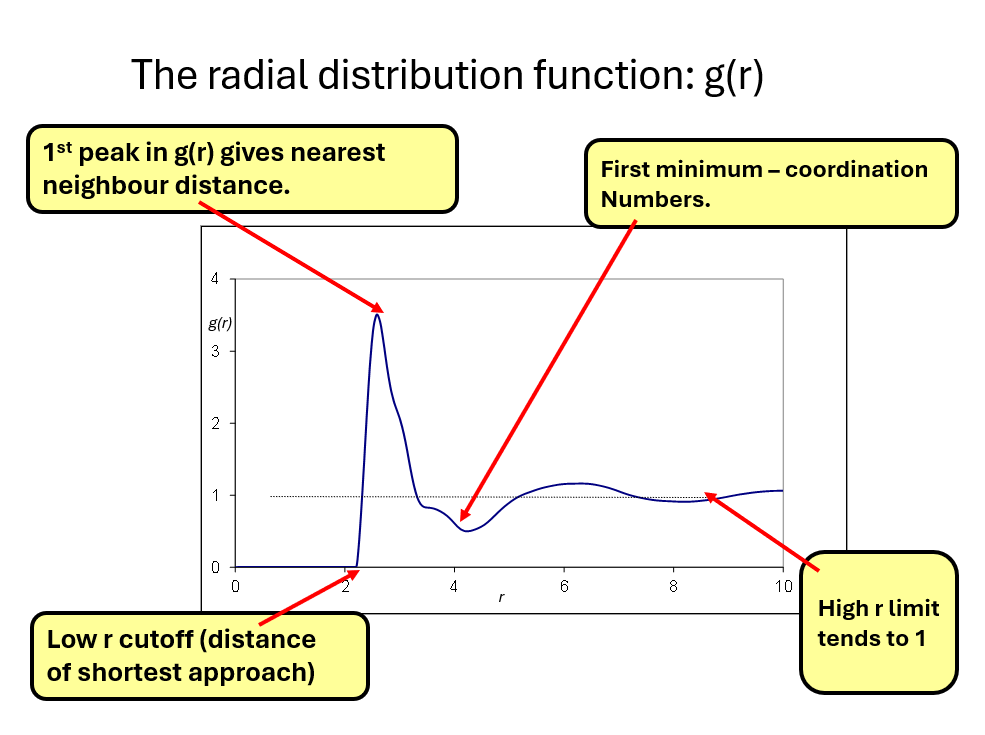
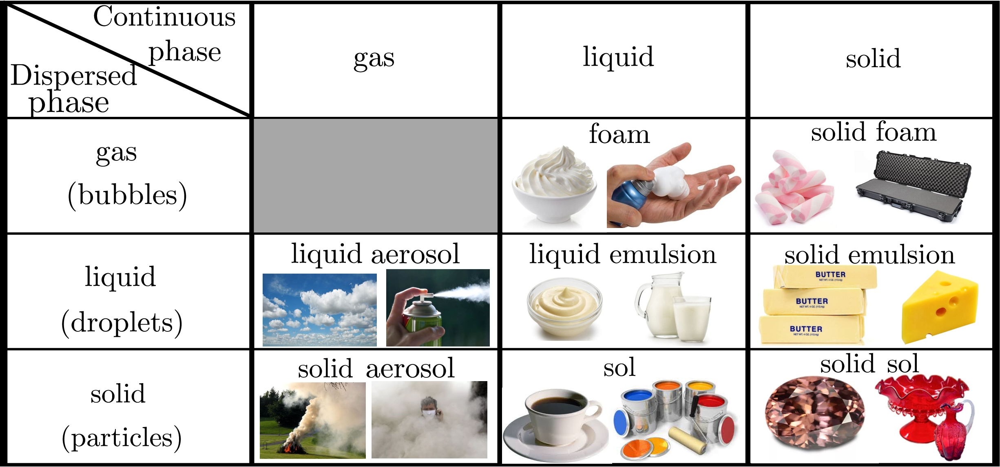
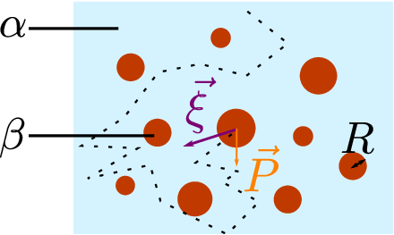
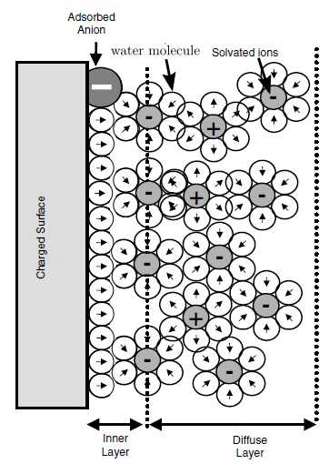
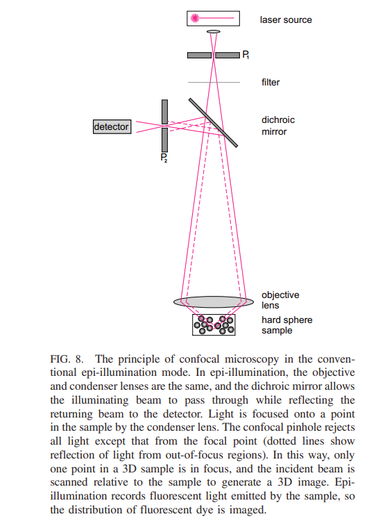
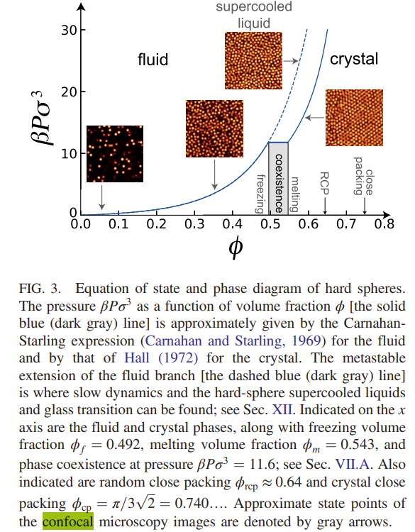
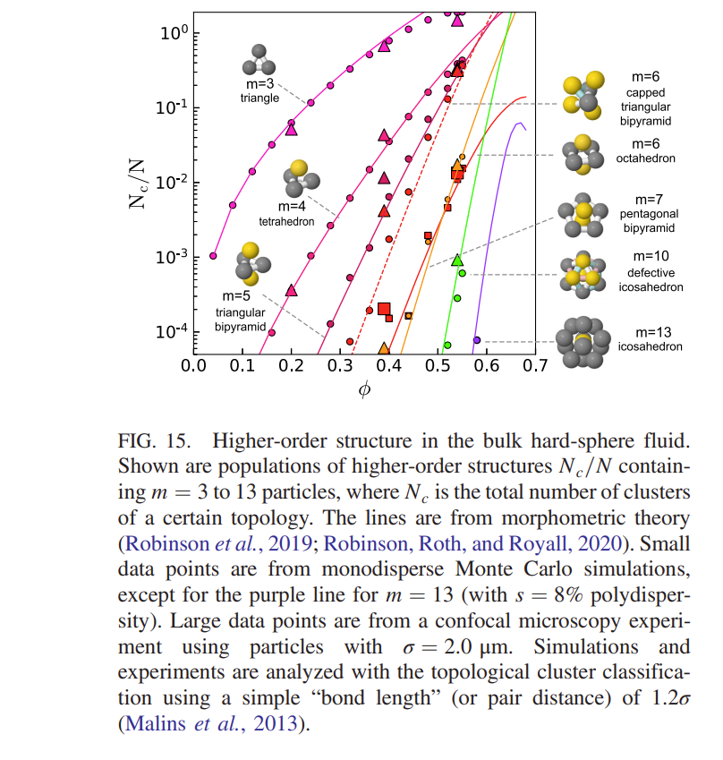
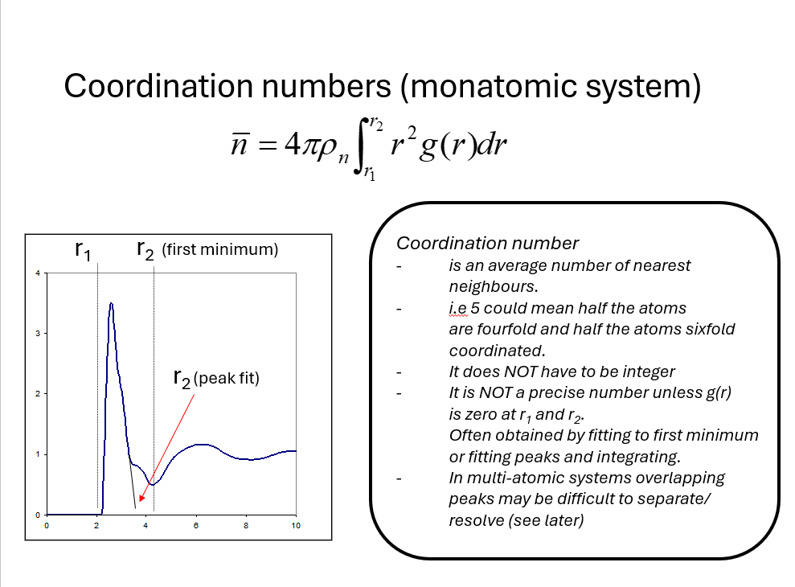

12 Measurements in real space
In the theory part of the course you have been introduced formally to the radial distribution function \(g(r)\) and seen how it is a useful description of the arrangement of particles in a disordered system. In particular, in the absence of the long range periodic order that is associated with crystalline materials it is one of the first things we wish to find for liquid or glassy material. In our examples we assume that we are looking at a uniform and isotropic material, that is, there is no preferred direction in the material and no density variations on length scales much greater than the particle size. That is, macroscopically the material appears is of uniform density. It is also possible to give a more general definition \(g(\bf{r})\) where we recognise that there is some preferred orientation of the atoms around each other in the material but we will not consider it here.
12.1 A simple description of \(g(r)\)
In layman’s terms the radial distribution function is often described loosely as the probability of finding another particle at a distance from a particle at the origin. If we think about it this way we must remember that \(g(r)\) is a statistical function so what we are really trying to express is the average of this distribution taking each atom in the material in turn as the ‘origin’. Expressed in this way you might worry about what this means for atoms on the ‘edge’. Normally this is not a concern for large samples, but beware about the definition of \(g(r)\)if you start approaching ‘nano-sized’ materials.
A better definition is that \(g(r)\) represents the deviation from the mean particle density, normalised to one, as you move outward from a particle at the origin. It can be mathematically formulated as \[ g(r)=\frac{1}{4\pi r^2\rho}\left\langle \sum_{i\neq0}\delta\!\left(r-r_i\right)\right\rangle, \] where \(\rho=N/V\) is the average number density, \(r_i\) is the distance of particle \(i\) from the reference particle, and \(\langle\cdots\rangle\) denotes an average over all reference particles. Note that we assumed that this function only depends on the modulus \(r=\left|\mathbf{r}\right|\), i.e., that the material is isotropic. This is not always the case, but if the material is translationally invariant, then this second-order correlation function stil only depends on \(\mathbf{r}=\mathbf{r_i}\), and not on the choice of the reference particle. This means that a straightforward generalization is \(g(\mathbf{r})=\frac{1}{\rho}\left\langle \sum_{i\neq0}\delta\!\left(\mathbf{r}-\mathbf{r_i}\right)\right\rangle\). This generalized relationship will be useful in the next session.
At large \(r\) we expect this to equate to a constant, related to the mean particle density of the material. When properly normalised to the mean density \(g(r) _{r\rightarrow \infty} \rightarrow 1\). The figure below shows the key features of a typical radial distribution function.

Points to note are
that \(g(r) = 0\) for distances below a characteristic cutoff distance (also referred to as the exclusion zone). Since particles occupy a finite volume and their positions are defined by their centres, two particles cannot approach more closely than a certain minimum distance. In dense systems such as liquids, this minimum distance is often identified with the particle diameter. However, the definition of particle diameter is not always straightforward, and might differ from this value, particularly in crystalline solids.
\(g(r)\) typically rises from 0 to give a ‘first peak’. The position of this peak is referred to as the nearest neighbour distance. (NB. it is not the same as the diameter of the particles).
After the nearest neighbour peak, \(g(r)\) typically dips below the mean density and is characterised by damped oscillating peaks and troughs until \(g(r)\) reaches the constant mean density.
The most curious and/or mathematically rigorous of you might wonder how the \(4\pi r^2\) appears when assuming that the pair correlation function applies to an isotropic material. Let’s start from its most general expression:
\[ g(\mathbf r) = \frac{1}{\rho} \left\langle \sum_{i\neq0} \delta^{(3)}(\mathbf r-\mathbf r_i) \right\rangle. \]
To connect this expression to the radial distribution function, we must average over all directions while keeping the distance \(r=|\mathbf{r}|\) fixed:
\[ g(r) = \frac{1}{4\pi} \int g(\mathbf r)\,d\Omega, \]
where
\[ d\Omega=\sin\theta\,d\theta\,d\phi. \]
Substituting the definition of \(g(\mathbf r)\) gives
\[ g(r) = \frac{1}{4\pi\rho} \left\langle \sum_{i\neq0} \int d\Omega\, \delta^{(3)}(\mathbf r-\mathbf r_i) \right\rangle. \]
The key question is therefore how to express the three-dimensional Dirac delta in spherical coordinates.
Recall that under a change of variables, a Dirac delta acquires the inverse Jacobian. In one dimension,
\[ \delta(f(x)) = \sum_i \frac{\delta(x-x_i)} {\left|f'(x_i)\right|}, \]
where the \(x_i\) are the roots of \(f(x)\).
More generally, if a coordinate transformation \((x,y,z)\mapsto(u,v,w)\) has Jacobian \(J\), then
\[ \delta(x-x_0)\, \delta(y-y_0)\, \delta(z-z_0) = \frac{ \delta(u-u_0)\, \delta(v-v_0)\, \delta(w-w_0) }{ |J| }. \]
For spherical coordinates,
\[ (x,y,z) = (r\sin\theta\cos\phi, \; r\sin\theta\sin\phi, \; r\cos\theta), \]
whose Jacobian is
\[ J=r^2\sin\theta. \]
Therefore
\[ d^3r = r^2\sin\theta\,dr\,d\theta\,d\phi, \]
and the three-dimensional delta becomes
\[ \delta^{(3)}(\mathbf r-\mathbf r_i) = \frac{ \delta(r-r_i)\, \delta(\theta-\theta_i)\, \delta(\phi-\phi_i) }{ r^2\sin\theta }. \]
Substituting this result into the angular average yields
\[ \int d\Omega\, \delta^{(3)}(\mathbf r-\mathbf r_i) = \int \sin\theta\,d\theta\,d\phi\, \frac{ \delta(r-r_i)\, \delta(\theta-\theta_i)\, \delta(\phi-\phi_i) }{ r^2\sin\theta }. \]
The factor of \(\sin\theta\) from the solid-angle element cancels the \(\sin\theta\) in the denominator:
\[ = \frac{\delta(r-r_i)}{r^2} \int d\theta\, \delta(\theta-\theta_i) \int d\phi\, \delta(\phi-\phi_i). \]
Using the defining property of the Dirac delta,
\[ \int d\theta\,\delta(\theta-\theta_i)=1, \qquad \int d\phi\,\delta(\phi-\phi_i)=1, \]
we obtain
\[ \int d\Omega\, \delta^{(3)}(\mathbf r-\mathbf r_i) = \frac{\delta(r-r_i)}{r^2}. \]
Substituting this back into the definition of \(g(r)\) gives
\[ g(r) = \frac{1}{4\pi r^2\rho} \left\langle \sum_{i\neq0} \delta(r-r_i) \right\rangle. \]
This is the standard expression for the radial distribution function.
The factor \(4\pi r^2\) therefore has a purely geometric origin: it arises from the Jacobian \(r^2\sin\theta\) associated with transforming the three-dimensional Dirac delta from Cartesian to spherical coordinates and then integrating over all directions.
12.2 How to we measure \(g(r)\) directly for a material?
In order to measure \(g(r)\) directly, we need to obtain a 3D (unless we are looking at a 2D system) image of the material in which all the particle coordinates \(r_i(x,y,z)\) can be obtained. Although some modern techniques can obtain images with atomic resolution (for example scanning tunneling microscopy) they are mostly limited to surface imaging and not suitable for studying liquids (where atoms are moving around). Although some X-ray and electron microscopy techniques (see for example ptychography) can produce atomic scale resolution (using coherent imaging techniques) these are again largely confined to 2D surfaces and are again not suitable for atomic liquids.
A powerful alternative is to study colloidal suspensions, in which the constituent particles are typically hundreds of nanometres to several micrometres in size. Because these particles are many orders of magnitude larger than atoms, they can often be imaged directly in three dimensions using optical techniques. Colloids therefore provide an excellent model system for investigating disorder, phase transitions, and particle-scale dynamics in condensed matter. In particular, confocal microscopy makes it possible to reconstruct the three-dimensional coordinates of individual particles, and even to track their motion over time. As a result, many concepts that are difficult to probe directly in atomic liquids can be studied experimentally in colloidal systems. In the following sections, we will examine some of the techniques used to extract particle positions and characterize their structure and dynamics. We will manipulate real microscopic images from colloidal suspensions at the end of this course.
12.3 The structure of colloidal systems
If you ask someone what paint, milk, blood, fog, coffee and ink have in common, they would probably struggle to find a convincing answer. Physically, however, they all belong to the same broad class of materials: colloidal systems.
A colloid consists of a dispersed phase made of particles, droplets or bubbles suspended within a continuous phase. Depending on whether the dispersed and continuous phases are solid, liquid or gas, colloids can take many different forms, ranging from aerosols (fog, smoke) to emulsions (milk, mayonnaise), foams (whipped cream) and particle suspensions (paint, blood).

Various types of colloids depending on the thermodynamic state of dispersed and continuous phase. Pictures represents, from left to right, then from top to bottom : whipped cream, shaving foam, marshmallow, suitcase foam, clouds, liquid spray, mayonnaise, milk, butter, cheese, smoke, suspended dust, coffee, paint, zircon gemstone and selenium ruby (a type of coloured glass).
Despite their diversity, all colloids share a common characteristic: the dispersed objects are small enough to exhibit behaviour that differs markedly from both molecules and macroscopic particles. Their typical size ranges from a few nanometres to a few tens of micrometres. Because of this intermediate size scale, colloidal systems often display unique optical, rheological and transport properties that underpin countless applications in food processing, pharmaceuticals, coatings, printing technologies and environmental science.
A schematic colloidal suspension is shown below. The dispersed particles (phase \(\beta\)) are suspended within a continuous phase (phase \(\alpha\)). At sufficiently small sizes, the particles are continuously bombarded by molecules of the surrounding fluid, giving rise to Brownian motion, the random motion first observed by Robert Brown in 1827.

Typical structure of a colloidal suspension. The colloid is constituted by a continuous (or dispersing) phase, noted \(\alpha\), and a dispersed phase, noted \(\beta\). The radius (or typical size) \(R\) of the suspended particles ranges from between the nanometre and a few hundreds of micrometre. A typical example of Brownian motion is represented in dotted lines for the central particle. The P'eclet number, sometimes used in the definition of colloids, explicitly depends on the diffusion coefficient of this motion. The Brownian motion results from the interaction between the resulting force from the weight and the buoyancy of the particles \(\vec{P}\) and the random thermodynamic force \(\vec{\xi}\) due to collisions with molecules of the continuous phase, according to Langevin theory.
Some authors define colloidal systems primarily through this Brownian motion. In this view, a suspension is considered colloidal when random thermal motion is significant compared with the tendency of particles to sediment under gravity. A convenient measure of this competition is the Péclet number
\[ Pe=\frac{D}{vL}, \]
where \(D\) is the particle diffusion coefficient, \(v\) a characteristic sedimentation velocity and \(L\) a characteristic length scale. When \(Pe \gg 1\), Brownian diffusion dominates over sedimentation and particles remain well dispersed. For particles suspended in water under ambient conditions, this criterion typically corresponds to particle sizes below roughly one micrometre, in good agreement with the conventional size range of colloidal particles.
In this course we will focus primarily on colloidal suspensions, namely solid particles dispersed in a liquid. For simplicity, we will often model the particles as spherical objects interacting as nearly ideal hard-sphere systems, where particles interact primarily through excluded volume effects. Such systems have become invaluable model materials for investigating phase transitions, crystallisation and glass formation at the particle scale. Although idealised, this description captures many of the fundamental physical phenomena that make colloids attractive model systems for studying phase transitions, crystallisation, glasses and particle-scale organisation.
In reality, colloidal interactions are much more complex than ideal hard spheres: some practical difficulty immediately arises when attempting to create a colloidal suspension. If spherical particles are simply mixed into a solvent, they rarely remain uniformly dispersed for long. Attractive interactions, particularly van der Waals forces, tend to pull neighbouring particles together, leading to aggregation or flocculation (potentially visible in your coffee cup if you add oat milk in it).
From a thermodynamic perspective, colloidal dispersions are generally only metastable. Without additional stabilising mechanisms, particles progressively aggregate into larger clusters, due to (at least) so-called Van der Waals attraction, eventually resulting in macroscopic phase separation.
To maintain a homogeneous suspension, a repulsive interaction must be introduced to counteract these attractive forces. The most common stabilisation mechanism is electrostatic stabilisation. When particles acquire a surface charge, counter-ions in the surrounding liquid form an electrical double layer around each particle. As two particles approach one another, overlap of these double layers generates a repulsive force that can prevent aggregation.

Illustration of the ionic double layer around a charged colloidal particle. Picture modified from Adapted from T. Cosgrove, Colloid Science: Principles, Methods and Applications, John Wiley & Sons, 2010.
The thickness of the diffuse ionic layer is characterised by the so-called Debye length, which depends strongly on the salt concentration of the solvent. By modifying parameters such as pH or ionic strength, it is therefore possible to tune the balance between attraction and repulsion and control the stability of the suspension.
Another widely used approach is steric stabilisation. In this case, polymer chains are grafted onto the particle surfaces, creating a protective “hairy” layer. As particles approach each other, compression of these polymer layers becomes energetically unfavourable, generating a strong repulsion that suppresses aggregation.
12.4 How to we obtain \(g(r)\) and information about coordination from colloid systems.
If we have our ideal colloid there are several things we may wish to control. For example, what is the size of the particles (there will be a tendency for large particles to sediment), are the particles all the same size (polydispersivity), can we make systems with different shapes (e.g. ovoid), can we make systems with mixed particle sizes, can we introduce directional interactions (Janus particles) and how do you control the number density of the particles (the density of the particles is the crucial parameter for describing the hard sphere phase diagram)? These all pose theoretical and experimental difficulties of their own. Finally, once we’ve prepared our colloid with a controlled density … how do we study its structure (and dynamics)?
12.5 Confocal microscopy.
There are a few further steps we need to achieve to be able to measure and track the positions of the particles in our hard sphere colloid. Firstly, it is important that the particles are transparent, otherwise, we will not be able to see into the depth of the sample and secondly we need to match, as closely as possible, the refractive index of the solvent. If we don’t do this the difference in refractive index will mean light is quickly scattered in all directions meaning we will just have an opaque material. However, by making the particles all but invisible how to we determine their positions? The trick is to include a fluorescent dye their centre. When illuminated with the correct wavelength of light (using a laser) the particles will glow. This works well but how do we measure the positions of the particles in 3D. The answer is to use a confocal microscope as illustrated below (figure take from Royall et. al.2024).


Note, moving the sample up and down changes the ‘z’ direction and a three dimensional image may be obtained by ‘stacking’ vertically scanned 2D images.
Once the particles positions have been determined it is possible to plot \(g(r)\) for the different packing densities to show how it varies over the phase diagram as shown below
The early attempts at understanding the packing of particles in disordered materials came to te conclusion that 5 fold coordination (inconsistent with the long range order required for crystals) was the characteristic of simple dense packed structures. In the same spirit as these early experiments the results from confocal imaging have allowed the prevalence of different types of local ordering to be investigated. This leads to the mapping out the \(\textit{topological cluster distribution}\) (i.e. the different types of local structure) that occur in the system. As noted before, these higher order correlations may be calculated from the particle positions (once we have them) but cannot be determined unambiguously from measurements of \(g(r)\) alone.

These are just a few examples of the areas studied using colloids and confocal microscopy techqniues.
12.6 Calculation of \(g(r)\) directly from simulation
Although simulation is not strictly an experimental method, it is neither a truly theoretical method either. This said, from the experimentalist point of view, especially in the case of the colloind systems studied above, they provide a direct comparison in real space with the data. As such the experiemntal results are an important check of the veracity of the simulation methods especially with regard to the application of for example theoretical potentials. The simulation methods naturally exploit the interaction of the particles in real space (we know the positions of the particles and we calculate how they move under the influence of the interparticle forces. Hence, it is quite straight forward to compare the real space configurations measured in experiment with the particle coordinates in the simulation. The comparison between the experiment and simulation and the level of agreement that can be achieved can be strikingly seen in the comparison of \(g(r)\) for hard spheres shown above. Simulations however are not the answer to everything. They get more and more computer intensive as larger numbers of particles are included and the time scales over which they are carried out are extremely short compared to those in experiments. The latter is a particular issue with studies of the glass transition (as always) where the physical processes taking place may occur over a very wide range of timescales.
The comparison of simulation results with experimental diffraction data is more difficult. Diffraction experiments are a reciprocal space measurement and to compare to simulation we need to work out the corresponding real space (\(g(r)\) ) distributions. Hence when comparing experiment with simulation we have to choose whether to transform our reciprocal space data to real space (with associated problems) or convert the real space data from our simulations to reciprocal space for comparison (that also has problems). This is the subject of the next part of this course.
12.7 Practical Exercise: Determining Structure from the Radial Distribution Function
In this exercise, you will use the provided Python code to calculate the radial distribution function, \(g(r)\), from a set of particle coordinates. By applying the same analysis to different systems, you will discover how \(g(r)\) can distinguish between gases, liquids, and solids, and how quantitative structural information can be extracted from experimental and simulation data.
12.7.1 Learning Objectives
By the end of this exercise, you should be able to:
- Run a Python script that calculates \(g(r)\) from particle coordinates.
- Understand the purpose of each section of the code.
- Interpret the main features of a radial distribution function.
- Identify whether a sample is a gas, liquid, or solid from its \(g(r)\).
- Estimate:
- the closest distance of approach,
- the average nearest-neighbour distance,
- the cutoff distance defining the first coordination shell,
- the coordination number.
12.7.2 Obtaining and Visualising the Data
If not already done, download the coordinate and code files from the shared University of Bristol folder:
Data folder: Download the coordinate datasets
The folder contains particle coordinates for several systems:
- Graphite (perfect structure)
- Graphite at room temperature
- Silicon (perfect structure)
- Silicon at room temperature
- Water
- A theoretical Lennard-Jones Gas (with arbitrary length units!)
Each file contains the \((x,y,z)\) coordinates of all particles in the sample.
Choose one dataset to analyse. Later in the exercise you will compare your results with your classmates having worked on different systems. It is a good idea to coordinate with one or two of your direct neighbours to work on different datasets.
12.7.3 Running the Code
Locate the line in the Python script that loads the particle coordinates:
positions = np.loadtxt("filename.txt")Replace the filename by one of the supplied datasets and execute the script.
Let’s review the code main steps and make sure we understand what information is being calculated.
12.7.3.1 Loading the Coordinates
positions = np.loadtxt(...)
N = len(positions)positionscontains a table whose various rows are the (x,y,z) components of the particles in the sampleNis the number of lines, i.e. the number of particles
12.7.3.2 Determining the Simulation Volume
The code determines the dimensions of the simulation box and estimates its volume, which is necessary to compute the number density of the particles:
xmin = np.min(positions[:,0])
xmax = np.max(positions[:,0])
...
volume = Lx * Ly * Lz12.7.3.3 Calculating the Number Density
The particle number density is calculated as
\[ \rho=\frac{N}{V}. \]
12.7.3.4 Questions
- What physical quantity does \(\rho\) represent?
- Would you expect \(\rho\) to be larger for a gas or a liquid?
12.7.3.5 Dividing Distances into Bins
The code creates a histogram of interparticle distances.
n_bins = 10012.7.3.6 Questions
- What is the purpose of the histogram bins?
- What would happen if very few bins were used?
- What would happen if an extremely large number of bins were used?
12.7.3.7 Measuring Pair Distances
The code loops over all particle pairs and calculates their separation:
r = np.sqrt(dx*dx + dy*dy + dz*dz)12.7.3.8 Normalisation
The histogram is converted into the radial distribution function,
\[ g(r), \]
by comparing the measured number of neighbours with the number expected in a perfectly random distribution.
12.7.4 First Analysis of Your Graph
Run the code and examine the resulting plot.
12.7.4.1 Questions
- Why is \(g(r)\) zero at short distances?
- At what value of \(r\) does it first become non-zero?
- Is there a clear first peak?
- Are there several peaks?
- Does the curve eventually approach \(g(r)=1\)?
Discuss your observations with your neighbours, and compare with their own systems.
12.7.5 Finite-Size Effects and Periodic Boundary Conditions
Before moving on to identifying the phase of your material, take a careful look at your \(g(r)\) curve.
12.7.5.1 An Observation
For an ideal liquid or gas, we would expect
\[ g(r) \rightarrow 1 \]
after \(r\) exceeds a few particle diameters, since particles become effectively uncorrelated when they are sufficiently far apart. It should also happen for crystals, but often at distances bigger than what can be observed experimentally while still resolving the first neighbours structure.
However, you may notice that your calculated \(g(r)\) for the liquid and gas datasets does not seem to approach 1 at large \(r\).
12.7.5.2 Think About It
Why might the measured \(g(r)\) fail to reach 1, even though the system should behave like a liquid or gas?
Discuss your ideas with your neighbours before continuing.
12.7.5.3 A Clue in the Code
In the distance-calculation section of the script, you may have noticed the following commented-out lines:
# For a gas or liquid, implement periodic boundary conditions
# (minimum-image convention)
# dx = dx - Lx * round(dx / Lx)
# dy = dy - Ly * round(dy / Ly)
# dz = dz - Lz * round(dz / Lz)These lines implement periodic boundary conditions using the minimum-image convention.
The idea is to treat the simulation box as if it were repeated infinitely in every direction.
A particle leaving one side of the box immediately re-enters from the opposite side.
When calculating distances, we therefore measure the shortest possible separation between two particles, taking into account all neighbouring copies of the simulation box.
12.7.5.4 Try It Yourself
You might first want to change the variables OutputName and GraphName to be able to compare both outputs.
Uncomment the three lines:
dx = dx - Lx * round(dx / Lx)
dy = dy - Ly * round(dy / Ly)
dz = dz - Lz * round(dz / Lz)and run the code again on your dataset.
Does \(g(r)\) now approach 1 at large distances?
Which result should you consider as correct and why?
12.7.5.5 Discussion
The answer is not necessarily the same as for liquids and gases.
For liquids and gases, periodic boundary conditions are often essential because they reduce finite-size effects and better represent an effectively infinite bulk material, provided their structure is not correlated over the length of the box.
For crystals, however, the coordinates correspond to a specific finite arrangement of atoms. Artificially repeating the simulation box may introduce correlations that were not directly present in the original dataset. Whether periodic boundaries should be used therefore depends on what physical system the coordinates are intended to represent.
12.7.6 Identifying the Phase
The overall shape of \(g(r)\) reveals the state of matter.
12.7.6.1 Typical Gas
- Weak or no pronounced peaks.
- \(g(r)\approx1\) over most distances.
- Little spatial order.
12.7.6.2 Typical Liquid
- Strong first peak.
- Smaller secondary peaks.
- Oscillations gradually decay towards 1.
12.7.6.3 Typical Crystal / Solid
- Many sharp peaks.
- Well defined neighbour shells.
- Long-range order visible over large distances. (\(g(r)\approx1\) might not ne observable over realistic datasets)
12.7.6.4 Questions
- Does your sample behave as a gas, liquid, or solid?
- Compare your graph with those obtained by neighbouring classmates.
- What are the main differences between the three classes of materials?
12.7.7 Quantitative Information from \(g(r)\)
One of the strengths of the radial distribution function is that it contains quantitative structural information.
12.7.7.1 Closest Distance of Approach
Estimate the distance at which \(g(r)\) first becomes significantly different from zero. What is the closest distance of approach in your sample?
12.7.7.2 Nearest-Neighbour Distance
Locate the first maximum of \(g(r)\).
The position of this first peak corresponds to the most probable nearest-neighbour distance.
What is the nearest-neighbour distance in your sample?
12.7.7.3 Cutoff Distance of the First Coordination Shell
Locate the first minimum immediately after the first peak.
This is commonly used to define the boundary of the first coordination shell. What value do you obtain for the cutoff distance?
12.7.7.4 Coordination Number (if time allows)
The coordination number is the average number of neighbours contained within the first shell.
It can be obtained from
\[ N_c=4\pi\rho \int_0^{r_c}g(r)r^2dr, \]
where \(r_c\) is the position of the first minimum.
- Estimate the coordination number of your sample.
- How does your result compare with those obtained by neighbouring groups?
- Which sample appears to have the largest coordination number?
12.7.8 Extension Activity: Effect of Temperature
Analyse both:
- Silicon at 0 K
- Silicon at Room Temperature
Compare the resulting radial distribution functions.
- How does temperature affect the height of the peaks?
- How does temperature affect the width of the peaks?
- Does long-range order disappear completely?
- What physical mechanism explains the observed differences?
12.7.9 Conclusions
Before moving on, make sure that you can confidently:
Distinguish a gas, liquid, and solid from a radial distribution function.
Estimate the closest distance of approach.
Determine the average nearest-neighbour distance.
Identify the cutoff distance of the first coordination shell.
Estimate the coordination number.
12.7.10 Data Sources
The coordinate datasets used in this exercise were generated from the following sources:
Graphite and Silicon: crystal structures obtained from the Materials Project database, with Gaussian positional noise added to mimic thermal motion.
Liquid configurations (water): are obtained from the Zenodo public database published along Cassone, G., Martelli, F. Electrofreezing of liquid water at ambient conditions. Nat Commun 15, 1856 (2024)
Gas configurations: obtained from running the simulations from Alexei Korolev’s GitHub
Please acknowledge these sources if you use the datasets outside this practical session.
12.8 In summary: What can we learn from \(g(r)\)?
12.8.1 The exclusion zone
A characteristic feature of the radial distribution function is the presence of an exclusion zone, corresponding to a range of distances for which \(g(r)=0\). This reflects the fact that particles occupy a finite volume and that their positions are defined by the locations of their centres. Consequently, two particles cannot approach each other more closely than a certain minimum distance, making the probability of finding particle centres within this range effectively zero. In dense systems such as liquids, this minimum distance is often taken to be approximately equal to the particle diameter. More generally, however, the exclusion zone should be interpreted as the closest distance of approach between neighbouring particles. The precise relationship between this distance and the particle diameter depends on the nature of the interactions and the structure of the material, and is not always straightforward, particularly in crystalline solids.
12.8.2 Average first neighbour distance
A second important feature of the radial distribution function is the presence of a first peak. Starting from the exclusion zone, where \(g(r)=0\), the function rises rapidly and reaches a maximum at a characteristic distance. This peak corresponds to the most probable separation between a particle and its nearest neighbours and is therefore referred to as the nearest-neighbour distance. Physically, it reflects the preferred local arrangement of particles within the material. It is important to note that the nearest-neighbour distance is generally not the same as the particle diameter. While the particle diameter characterises the size of an individual particle, the nearest-neighbour distance is determined by the structure of the system and the interactions between particles, and can therefore be significantly larger than the distance of closest approach.
12.8.3 Peak positions.
The peaks observed in \(g(r)\) correspond to the most common interparticle seperation. For an atomic system, they can typically be associated with chemical bonds and as you move further in \(r\) the \(\textit{medium}\) (i.e. next nearest neighbour …) range ordering. However, we must remember that this is only a pair corrrelation function. It does not \(\it{per~se}\) tell us about for example bond angles. These are formally be obtained from higher order correlation functionz (triplet, …) but these are not obtainable directly from \(g(r)\) itself.
Note. If we have a crystalline material the peaks in \(g(r)\) will be narrow (they will have an intrinsic width at least due to thermal vibration) and at low values of \(r\), \(g(r)\) will be zero between them. However, even in a crystalline material these peaks will start to broaden and get smaller at high \(r\) until, again, \(g(r)\) reaches mean density.
12.8.4 Coordination numbers.
\(g(r)\) is a dimensionless function that normalises to a mean density of one at large \(r\). For a material with a \(\textit{number~density}\), \(\rho_N\), the mean number density at distance \(r\) is hence \(\rho_N g(r)\). A thin spherical shell of thickness \(\Delta r\) at a distance \(r\) will have a volume \(4\pi r^2 \Delta r\) so that the mean number of atoms in the shell will be,
\(4\pi r^2 \rho_N(r) \Delta r\).
Hence the mean number of atoms in a spherical shell of inner radius \(r_1\) and outer radius \(r_2\) will be given by,
\(\bar{n} = 4\pi\rho_N\int_{r1}^{r2}r^2g(r)dr\).
If we define a peak in \(g(r)\) by \(r_1\) and \(r_2\) we call \(n\) the coordination number of the particles in the peak. The coordination number is the average number of neighbours contained within the first shell.

It is important to note that the coordination number is an average (\(g(r)\) is a statistical distribution) and in general will vary particle by particle in the material. It does not have to be integer and unless \(g(r_1)=g(r_2)=0\) it is an ill defined quantity. Nevertheless, it is a commonly quoted number in research papers so it is important to read carefully how it has been caclulated to obtain meaningful conclusions that can be compared to figures in other research work.
12.9 Dynamics in real space
Confocal microscopy experiments are not only useful for static measurements of \(g(r)\) but also open up the possibility for studying the dynamics of the system (how the particles move over time), that is, measurement of the time dependent pair correlation function \(G(r,t)\) I’ll not say much about dynamics in this lecture, but it is worth mentioning it as it is a very active research field. Needless to say the process involves taking confocal images of the particles over time scales in which they will move only slightly from their initial position. With sophisticated software it is then possible to label the particles and track their position and hence coordinates in succesive image frames. This work well if you are in the sweet spot for the measurements but is a challenge, for example in glass transition experiments, where the experimental timescales become longer and longer as you approach the conditions for the glass transition to take place. This is still a very active field.
12.10 Conclusion and keypoints
In this section we have considered the experimental determination of \(g(r)\).
- We have seen that this is not realistically possible for atmonic systems,
- we have seen how colloid systems are ideal systems for studying the properties of hard-sphere and closely related systems on the 100nm scale,
- we have seen how \(g(r)\) for colloids may be obtained from the coordinates obtained from confocal microscopy,
- we have seen how \(g(r)\) and higher order correlations may be obtained from these coordinates,
- we have seen how we can extend the confocal microscopy method to study particle dynamics.